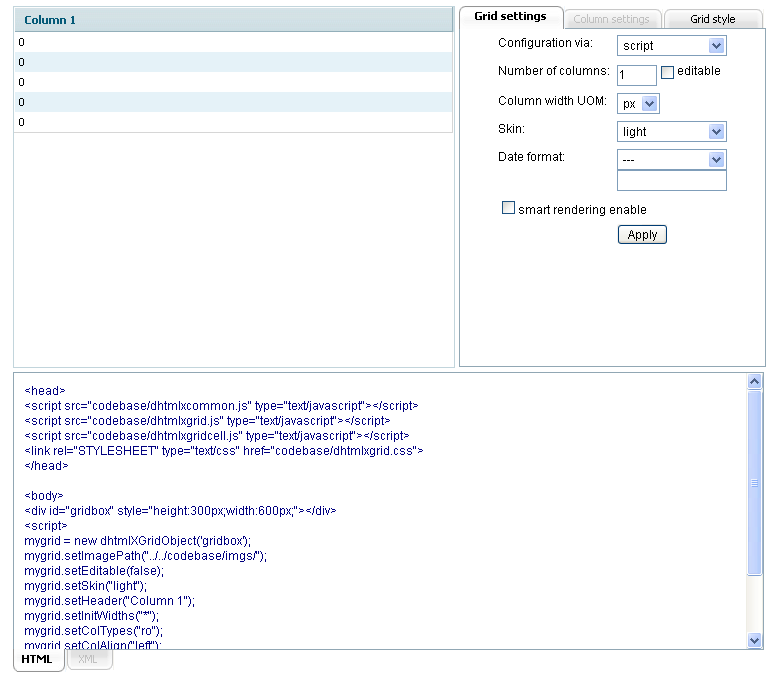
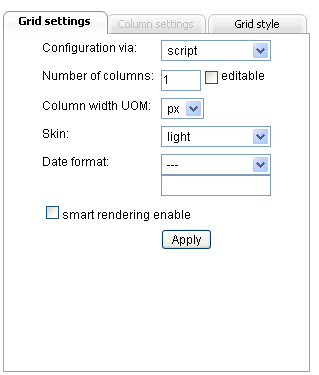
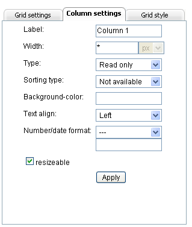
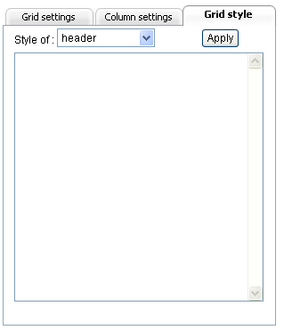
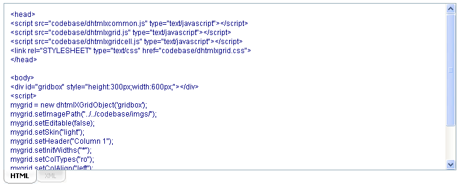
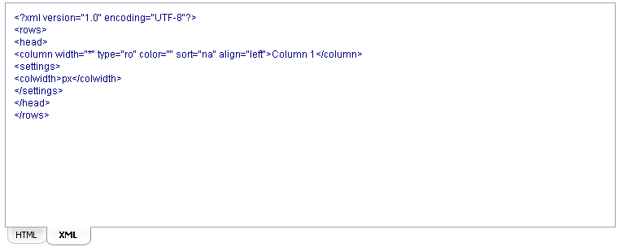

dhtmlxGrid Wizard's Interface
http://dhtmlx.com/docs/products/dhtmlxGrid/doc/wizard/index.html
This utility's interface is indeed intuitive and user-friendly. The screen area is divided into three parts:
- The left upper part displays the preview of grid visual appearance;
- The right upper part is organized in tabs and contains fields for specifying grid and columns settings and setting grid style;
- The lower part displays the code strings that should be copied either to an XML file or to user's HTML.

When a user modifies any field in “Grid settings” or “Column settings” tabs, this modification highlights this field's title. The title text returns to its normal state right after the modification was applied. When the modification is not applied yet, a click on the highlighted field's title returns the latest field value. The modification is applied when:
- A user presses the button “Apply”;
- Another field on the current tab is focused.
The result of any applied modification can be viewed on the fly in the:
- Grid preview;
- Code.
The default grid that is loaded on startup consists of one column and five rows. The user should modify the initial grid settings to get the grid he needs. Both the settings and the code are organized in tabs. There are the following tabs in dhtmlxGrid Wizard:
- Grid Settings;
- Column Settings (disabled until at least any column is selected);
- Grid Style;
- HTMl;
- XML (disabled on startup).
Grid Settings Tab
The tab “Grid settings” contains the following fields:

- Configuration via (a drop-down list):
The field values define the way grid is going to be configured: either via Script (the grid configuration is placed to user's HTML page) or via XML (grid configuration is stored in a separate XML file). In case of configuration via XML a user should not forget to add the name of this separate XML file into loadXML() method (which loads XML file with grid configuration) in the code. By default the option “script” is set.
- Number of columns:
The field value defines the number of columns in grid. By default the number of columns equals “1”. As our grid can contain the unlimited number of columns, a user can type in any digit in this field.
- Editable (a checkbox):
This checkbox is used to allow/deny editing the content/data in grid. If the checkbox is not checked it will be impossible to edit the data in grid and vice versa. “Read only” and “Read only (number)” column are always read only.
- Column width UOM (a drop-down list):
These field values define the units of measurement for columns width: columns width can be set either in px (pixels) or in % (percent). By default the option “px” is set.
- Skin (a drop-down list):
This field lists the skins that user can apply to grid. There are 6 skins available:
- Gray;
- Light;
- Mt;
- Xp;
- Clear;
- Modern.
The default skin for grid on startup is a “light” one.
- Date format (a drop-down list, an input):
There are two fields for setting the date format. The first field lists the possible date formats that can be set for the column types “Date/calendar” and “Date/calendarA”:
- –;
- m-d-y;
- m-d-Y;
- Y-m-d;
- y-m-d;
- d/m/Y;
- d/m/y.
Where:
- %m - is a numeric representation of a month, with leading zeros (01..12);
- %d - is a date of the month, 2 digits with leading zeros (01..30);
- %y - is a two-digit representation of a year (00..99);
- %Y - is a full numeric representation of a year, 4 digits (1900..2100).
The second field is an input field just below the “Data format” drop-down list. The predefined date formats are displayed in this field when a user chooses one format from the list. For example, if a user chooses “m-d-y” date format from the list, the input field will display the following: ”%Y-%m-%d”. This field is made editable as a user can choose to apply some other date formats instead of the predefined ones. For instance, it is possible to display only a year (%Y year) or use other separators between the date values such as [%d][%m][%Y]. To specify some other date format the user should just type in the input field the necessary date format and press the “Apply” button (or focus another field on the current tab). The date format displayed in the input field will be applied to the columns regardless of the data format chosen in the drop-down list. For example, if a user chooses the “m-d-y” date format from the list and types ”[%d][%m][%Y]” in the input field, the ”[%d][%m][%Y]” date format will be applied to the columns.
- Smart rendering enable (a checkbox):
Smart rendering mode is a great way of holding the whole data, but rendering only what the user sees. So if the user sees only 20 rows out of 1000, the grid will render only those 20 rows but not the whole 1000. And when the user scrolls down another bunch of rows will be rendered. If the checkbox is checked the smart rendering mode is enabled. By default the checkbox is not checked.
Column Settings Tab
On startup this tab is disabled until a user selects any column in the grid preview. To select a column a user should click either the column label area or any column's row area. The label text of the selected column changes its color while the selected row changes its background color (the colors of the selected row and the selected label text depend on the chosen grid skin). The following fields are available in the “Column settings” tabs:

- Label:
This input field displays the label of the column that was clicked by a user. The user can easily change the label of this column just by typing in the new text into the field and pressing the “Apply” button (or focus another field on the current tab).
- Width:
There is one input field and also one read only field displaying the UOM of the column width. The purpose of the read only field is just to remind a user what UOM is set now. This field can't be used for changing the UOM. For UOM changing see Column width UOM. The input field allows a user to set the column width. By default this field displays a “*” char which is done to make the column use all available space. If there are several columns with “*” value, they divide all available space equally among themselves. The field can contain only digits or a “*” char.
- Type (a drop-down list):
A user is able to set one of the predefined cell types in a column such as:
- Read only - the cell can't be edited;
- Read only (number) - the cell can't be edited. The number format can be set for this type of cells;
- Editable - the cell can be edited;
- Editable (number) - the cell can be edited. The number format can be set for this type of cells;
- Text - the text is edited in popup multiline text area;
- Dynamical - shows up/down icon depending on the value;
- Price - shows $ before a value;
- Checkbox - a standard checkbox;
- Radio button - a column oriented radio button;
- Color picker - simple color picker. Value considered as color code or name;
- Date/calendar - a popup calendar;
- Date/calednarA - a popup calendar with the ability to enter data manually.
By default all the columns are created in read only state.
- Sorting type (a drop-down list):
This field lists the sorting types for the columns in grid. A user can define a certain sorting types for every column of the following ones:
- Not available - sorting is not available for the column;
- Integer - sort values as integers (generally as any number);
- String - sort values as strings;
- Price - sort values as prices;
- Date - sort values as dates.
By default all the columns are created with “not available” type of sorting.
- Background-color:
This field allows user to specify the background color for a column. On clicking this field a color picker is displayed. A user can choose a color either with the help of the color picker or just typing a color's hexadecimal code or just color's name, for example, “red” into the field and press the “Apply” button (or focus another field on the current tab). By default the columns background color is defined by a “light” skin.
- Text align (a drop-down list):
This field allows user to specify text align in the column:
- Left;
- Center;
- Right.
All columns are created with “Left” align by default.
- Number format (a drop-down list, an input):
There are two fields for setting the number format. The first field lists the predefined number formats that can be set for the column types “Readonly(number)” and “Editable(number)”:
- –;
- 0.000;
- 0.000.00;
- 0.00%.
The second field is an input field just below the “Number format” drop-down list. The predefined number formats are displayed in this field when a user chooses one format from the list. For example, if a user chooses “0.000” number format from the list, the input field will display the following: “0,000”. This field is made editable as a user can choose to apply some other number formats instead of the predefined ones, for instance, “0.000$”. To specify some other number format the user should just type in the input field the necessary number format and press the “Apply” button (or focus another field on the current tab). The number format displayed in the input field will be applied to the columns regardless of the number format chosen in the drop-down list. For example, if a user chooses the “0.000” number format from the list and types “0.000$” in the input field, the “0.000$” number format will be applied to the columns.
- Resizable (a checkbox):
This checkbox is used to allow/deny column resizing. The column resizing should be set for each column separately. A column is made resizable if:
- Its width is not set as “*”;
- The checkbox “Resizable” is checked.
Grid Style Tab
The “Grid style” tab is used for specify style for different grid's elements such as:
- Header;
- Cells;
- Selected cell;
- Selected row.

For example, a user can specify the following style for the grid header: color:#ffab4c; height:30px; border:dotted #ff03C0 3px; The style will be applied to the grid's element right after a user presses the “Apply” button and can be seen in the grid preview.
HTML Tab
This tab displays code strings that a user should copy to his project. All the modifications that are applied to the whole grid or to its elements are automatically displayed in this tab.

XML Tab
This tab is disabled on startup. It becomes enabled only when a user chooses the “XML” type of grid configuration in the “Configuration via” field. XML tab displays code strings that a user should copy to a separate XML file and link this file to his project by specifying the file name in loadXML() method.
